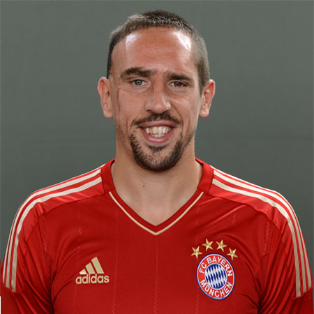

 Franck Ribéry, né le 7 avril 1983 à Boulogne-sur-Mer, est un footballeur international français qui évolue au poste d'ailier gauche au Bayern Munich. Considéré comme l'un des meilleurs joueurs d'Europe, il remporte le prix du meilleur joueur français de l'année 2007, 2008 et 20131, le Trophée UNFP du meilleur espoir de Ligue 1 en 2006, le prix du meilleur joueur du championnat d'Allemagne en 2008 et 20132, le prix UEFA du meilleur joueur d'Europe en 20133 et termine troisième du Ballon d'or 20134. Sa vitesse, sa technique,sa rapidité d'exécution, sa vision du jeu ainsi que sa force de frappe font de lui l'un des leaders du Bayern Munich avec lequel il réalise notamment un quintuplé durant l'année 2013 en remportant le championnat d'Allemagne, la coupe d'Allemagne, la ligue des champions, la supercoupe de l'UEFA et la coupe du monde des clubs5. Il entre en équipe de France lors de la coupe du monde 2006 ; il marque son premier but face à l'Espagne et dispute la finale perdue face à l'Italie. Devenu par la suite le leader d'attaque des Bleus sous l'ère Raymond Domenech, il participe à l'échec de l'Euro 2008 et surtout à celui de la coupe du monde 2010, marqué entre autres par l'affaire de la « grève des joueurs » dont il est l'un des meneurs. Très critiqué à la suite du Mondial 2010, il est rappelé par Laurent Blanc pour préparer l'Euro 2012 où les Bleus s'arrêtent en quart de finale. Par la suite, il prend une tout autre envergure après l'arrivée du sélectionneur Didier Deschamps qui en fait son joueur majeur durant la campagne de qualification. Il devient alors le meilleur buteur des éliminatoires de son groupe, mais manque le Mondial 2014 en raison d'une blessure. De manière générale, il est considéré comme l'un des meilleurs joueurs de l'équipe de France depuis la retraite de Zinédine Zidane en 2006. Le 13 août 2014, il annonce sa retraite internationale6,7.